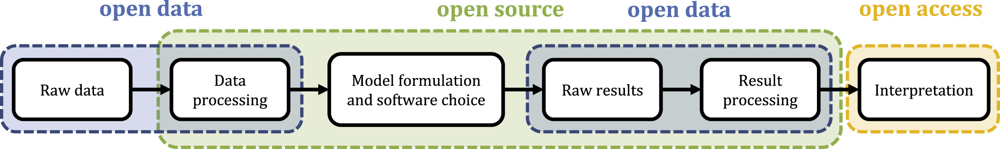

Introduction to Modelling and Scenarios#
Individual learning outcomes#
Use exploratory and normative scenarios approaches to structure a modelling analysis
Categorise models and know when to use which sort of model
Reflect on the trade-offs and simplifications necessary when translating a real-life energy system into an energy system model.
Understand the core building blocks of PyPSA-Zambia
Snakemake - is a workflow management tool - which splits a complex process into connected rules, each of which performs a task such as downloading data, or computing a value
PyPSA - is an energy system modelling framework for representing a sector-coupled energy system
Energy system models are used to answer questions#
What is the least-cost investments in generation to increase security of supply?
Which technologies can help close the energy access gap to 95% in 2030?
Will building a new transmission line between x and y reduce the curtailment of our solar plants at x?
If we build 3GW of solar photovoltaics, will electricity prices go up or down?
What level of tax-breaks/subsidies will be required to encourage private investment in generation?
If the number of electric vehicles (cars and two-wheelers) increase to 1 million in 2030, will we have enough electricity to charge them? What will happen to oil imports, subsidies and taxation?
Exercise#
Write down one energy question you think is crucially important to answer. Now, add as much detail as you can. Try to quantify details with numbers and statistics.
Do models provide the answers?#
In this session, we’ll discuss how we can use models to answer these types of questions.
Models produce numbers, not answers
You have to understand how the model works, and interpret the numbers to create insights
Then you can answer the question
A modeller uses a model to generate insights not numbers.
What are energy system models not#
They are not:
universal - often models can only answer questions in a narrow category. A different model is needed for different types of questions
always correct - the results you obtain are only as good as the data input, and the ways in which the model is used
In the end, modelling is as much about the people - the modellers - as the tool you use.
To understand the results from a model, you need to understand:
how the model works
the input data and assumptions used to parametrise the model
if the model is appropriate for the type of question being asked
Different types of models#
Different questions need different types of models
Methods
Optimisation - policy in, decisions out
Simulation - decisions in, outcome out
Scope / focus
Bottom-up - technical detail
Top-down - big picture (macro-economics)
Hybrid - both
Setting
Capacity Expansion (Investment)
Dispatch (Operational)
Network (e.g. Optimal Power Flow)
Whole Energy System Models combine perspectives of several disciplines:
Energy
Engineering
Economic
Environment
(Society?)
Exercise#
Reflect on energy model and tools you have used in the past. Can you categorise them according to the information given above?
Process of modelling#
Identify the question e.g. Will building a new transmission line between x and y reduce the curtailment of our solar plants at x?
Sometimes the questions need to be improved e.g. add detail or context.
Identify the context:
Who is asking the question? What sort of information do they actually want or need? Are they more interested in the engineering, or the economics, environment, or society? (Energy infrastructure, use and production general has effects across all of these topics).
Develop one or more scenario narratives
Choose, develop or build an appropriate tool or method or model.
Transform the question into “model inputs” - one or more scenarios.
This may also involve customising the model, such as adding custom constraints in an energy system model
Collecting data, processing it and entering it into the model may take a lot of time.
Multiple scenarios may be developed to explore alternatives.
Compare the results of these alternative scenarios.
Interpret these results, extract insights.
Communicate the insights.
Scenarios#
In many cases, modellers organise their work into a scenario analysis. Scenario analysis has a long history, building out of work at the Shell oil company, and is supported by a large academic literature.
Scenarios are used by many organisations today, including the International Energy Agency, the Intergovernmental Panel on Climate Change, BP, Shell. In academia there are many examples of scenario analysis, both in energy research and in other disciplines.
Importantly, scenarios are not projections, forecasts or predictions. Forecasts or predictions require some measure of likelihood e.g. “this is the most likely outcome.”
There are many different flavours of scenarios. Most commonly, scenarios are normative or exploratory. Normative scenarios prescribe a future situation. Exploratory scenarios maintain historical and current trends into the future.
Scenarios often include a narrative element. They describe the situation in qualitative terms. The role of the modeller is then to interpret this narrative description and parameterise their model to represent that scenario.
In a narrow engineering context, scenarios may not seem that relevant. However, understanding the broader context can still support the analysis of the modelling results.
Scenario analysis becomes more relevant:
as the time horizon lengthens
as the number of unknowns increase (uncertainty)
where the decision maker has control over only a few important levers
when decision makers are fixed on only a narrow range of options
Exercise 1#
Write down a short normative scenario. Use the following prompts if you get stuck:
“In 2030, the largest consumer of energy is … in Zambia. Climate change has … Economic growth is … The population is … [changes] in [economy/society/technology] have created new demands for [energy vector].”
Write down a short exploratory scenario. Use the following prompts if you get stuck:
“Today, the energy situation is … The underlying (current and historical) trends that have caused this are … and … Extending these trends into the future, this will cause … and … in 2030.”
Exercise 2#
When is a forecast useful?
Is it possible to forecast the energy sector? If so, under what conditions?
Why and when would you use a scenario instead of a forecast?
Parts of an open energy system modelling study#
Now lets focus on the technical, quantitative part of the energy system modelling process. At Open Energy Transition, we believe that open modelling is the right way to do modelling. We like to use open data where possible, only use open source models and we build worklows which combine data and modelling into one automated process.
However, extracting insights - interpreting the results - is something which cannot be automated (yet).

There are many different open-source energy system modelling frameworks. You can pick and choose which framework you think is best. Open Energy Transition like to use PyPSA, and have selected to use the PyPSA-Earth model generator on which to base the PyPSA-Zambia model.
PyPSA Zambia consists of open data, an open-source PyPSA model, and an open-source computational workflow software called Snakemake.
PyPSA - Python for Power Systems Analysis#
An open-source energy system modelling framework, written in Python.
Enables the creation of energy system models from individual components. More about PyPSA later…
Snakemake#
Software for construction, management, running and scheduling of computational workflow.
Think of this as a more powerful alternative to writing a long list of instructions. Think of a recipe:
Take a raw onion. Chop the onion. Make chopped onion.
Take chopped onion. Fry the onion to make fried onion.
Take fried onion, add chopped tomato and cook to make a sauce.
Take water. Boil in a large saucepan. Cooked pasta.
Take cooked pasta. Drain in a colander. Drained cooked pasta.
Take a plate, drained cooked pasta and sauce. Place pasta and sauce on the plate. Serve the meal.
In snakemake, we define each step of the workflows as a rule.
A rule has a name, input and outputs and runs code to transform the inputs into an output.
The links between the rules are created by the dependencies between input files and output files.
rule chop_onions:
inputs:
raw_onion.txt
knife.txt
outputs: chopped_onion.txt
run: chop_onions.py
rule fry_onions:
inputs:
chopped_onion.txt
frying_pan.txt
outputs: fried_onions.txt
run: fry_onions.txt